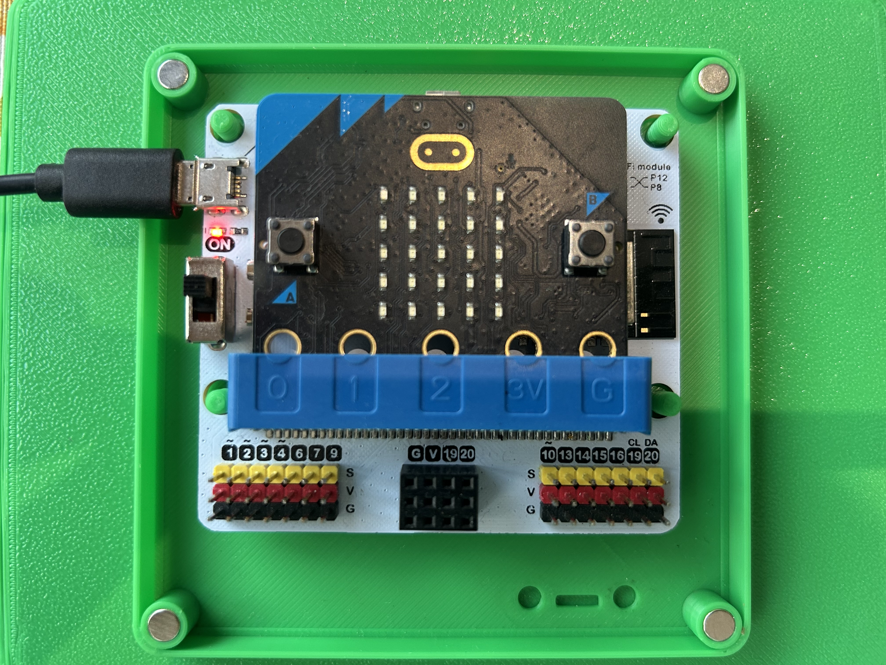
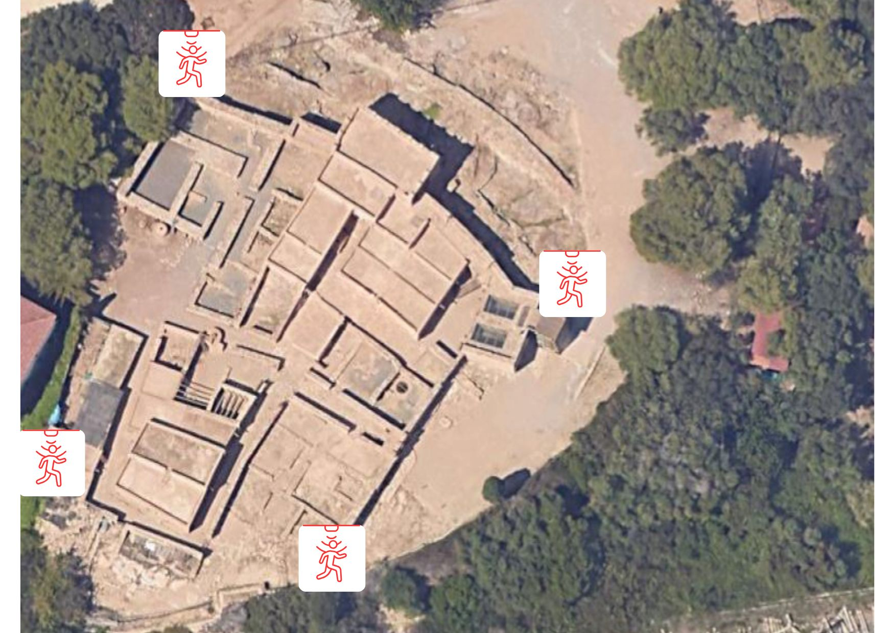
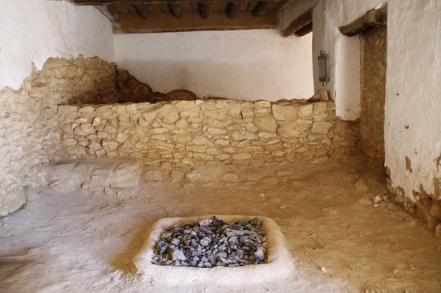
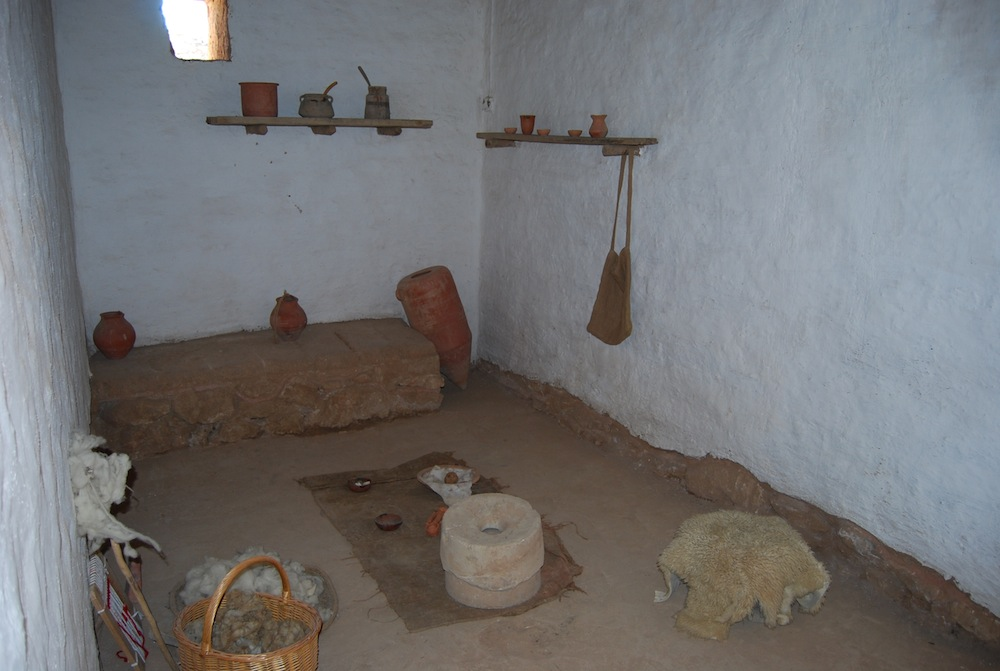
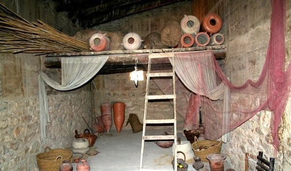
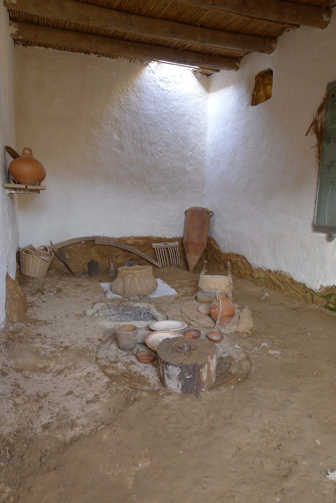

CARREGANT SISTEMA...
🏠
SISTEMA DE PROTECCIÓ INTEGRAL DEL JACIMENT (SPI)
Ciutadella de Calafell
ESTAT

Mòdul de Sensors

Vigilància Perimetral
Mapa del Jaciment
← Menú Principal

Casa 1

Casa 2

Casa 3

Casa 4
← Tornar a l'inici
Dades de la Casa
Humitat
-- %
Temperatura
-- °C
Inclinació
-- °
Pluja
-- mm
← Menú Principal
↗️
Nord-est
↖️
Nord-oest
↘️
Sud-est
↙️
Sud-oest
← Tornar
Historial Vigilància
← Menú Principal